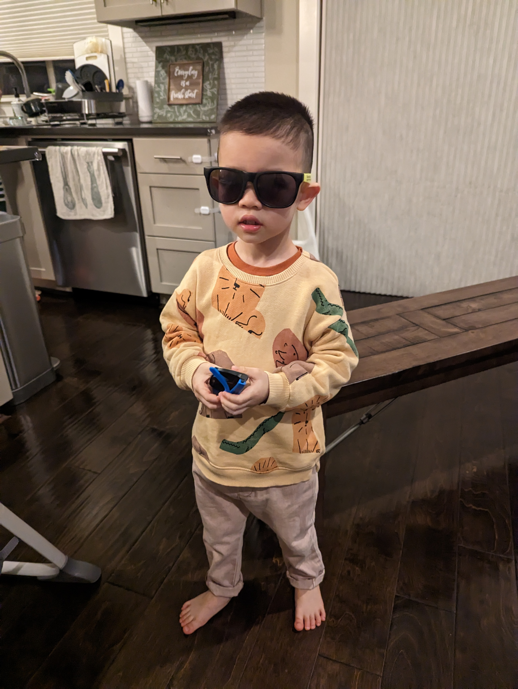
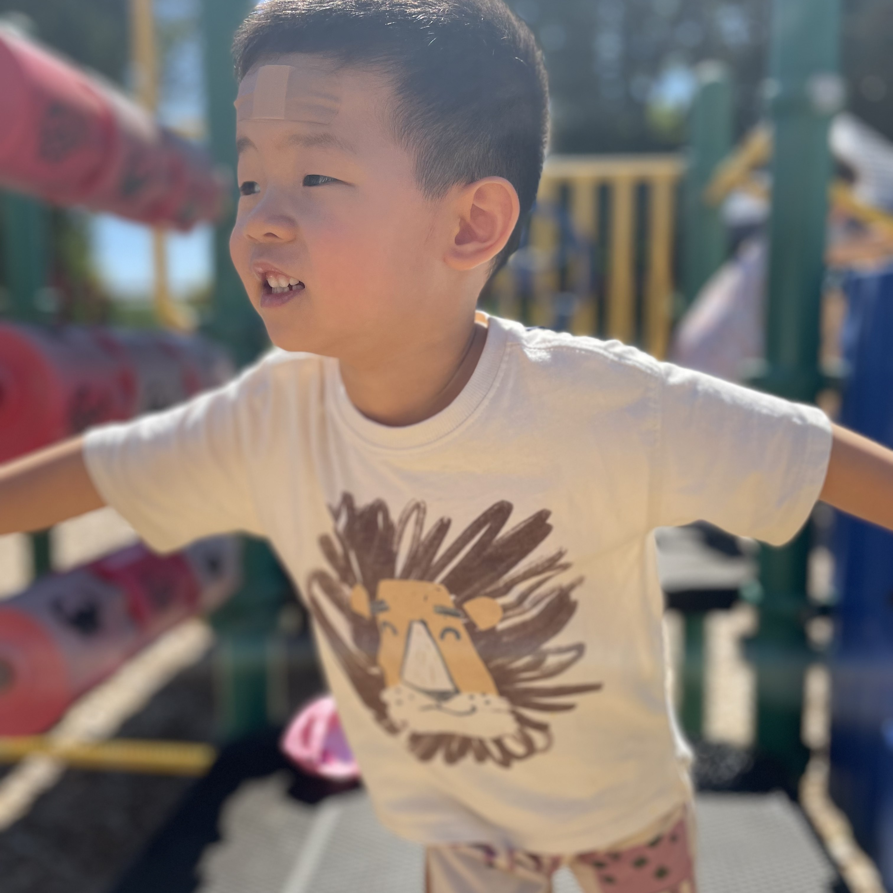
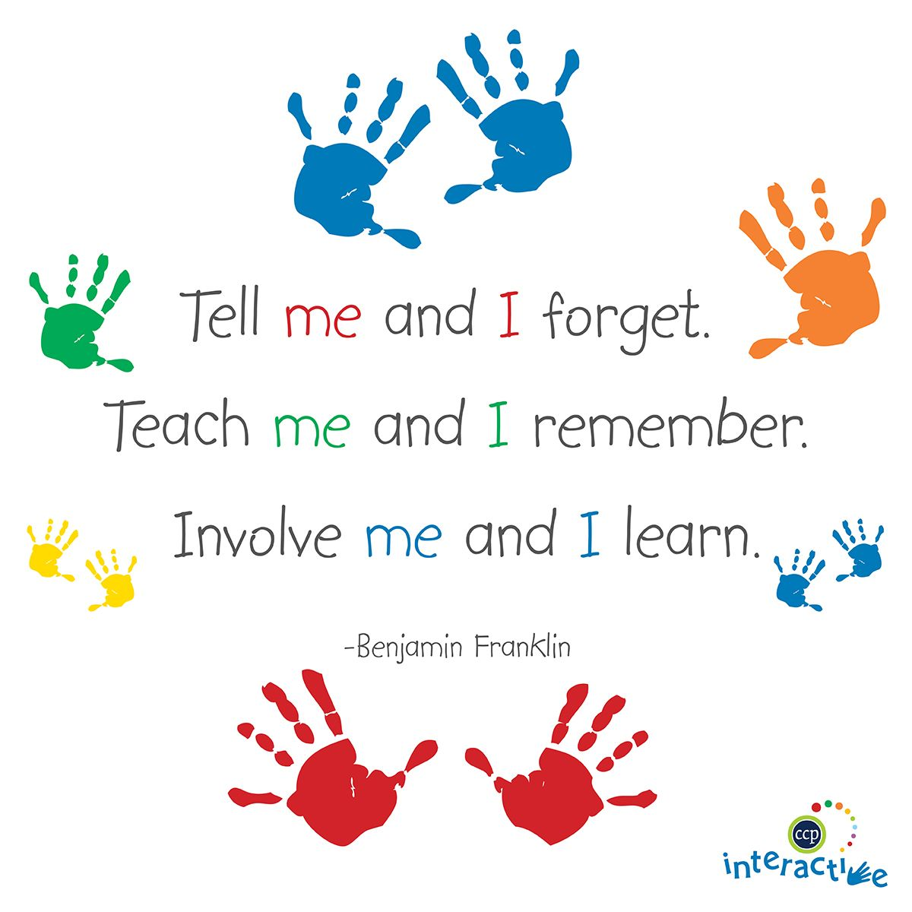
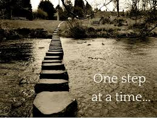

Derrek.L.Chen
My name is Derrek and I am four years old.
And I am never tired.
- I love music, both classic music and children's music.
- My favorite cartoons are Peppa Pig, Cocomelon and Bingo.
- I think coolest cars are fire trucks, digger trucks and garbage trucks.
- I enjoy playing outside, climbing up and sliding down. But I'm also very careful.
- When it is hot, I like to play in the water at Wilsonville parks.
- I can also be quiet and patient when playing inside.
- I love reading picture books.
- I like playing puzzles and magnetic blocks.
- My favorite food is all sorts of veggies and fruits, and crackers.
- My favorite people is Sarah Liu (Mom, 504-256-8969).
- My second (debatable) favorite people is William Chen (Dad, 504-343-1470).


Strengths
- I am a big helper. I like to help Mom, Dad and teachers too.
- I am a fast learner. Teach me one or two times and I will know that.
- I enjoy being around other kids and playing together.
- I enjoy participating in group activities.
- I understand most of the language people say.
- My Dad says I have an insane memory, whatever that is.
- Most of the time, I follow commands pretty well.
- I'm getting better at being patient.
- I'm getting better at expressing my requests.
- I'm improving my flexibility.
Weaknesses
- I'm working on my expressive and spontaneous language.
- While I'm good with parallel plays, I'm learning interactive plays.
- I'm trying to be more flexible when things do not go my way.
- I'm learning to properly express my emotions, especially anger and frustrations.
- I'm working on independent life skills, such as dressing myself.
- I can pee in the potty consistently and am working on poo in the potty.

Plans/Goals
- I want to be able to hold a back and forth conversation without prompting.
It could be as simple as this
Teacher: "Hi, Derrek!"
Me: "Hi, Mr. Thomas!"
- I want to be able to do cooperative plays with teachers and peers.
- I haven't eatn many times outside home.
I plan to be more comfortable eating outside, for example, at school.
- I want to transition from a mix of diapers and underpants to fully underpants soon.
- I hope to be able to do activities following teachers' instructions step by step.
- I hope to be able to properly express my emotions when I'm angry or frustrated.

WHAT WORKS
- I listen and follow commands said by soft tones.
- I understand emotions better by reading facial expressions.
- When everyone else is doing something, I would be more interested in joining.
- When I am overloaded by emotions, I may calm down with some physical interactions.
Such as pressing/holding my hands firmly, giving me a firm hug or rubbing my head or my back.
- I would understand "no" better when phrased with alternative actions.
For example,
if I throw objects, you can tell me "blocks on the table/floor"
if I climb, you can tell me "hands on the side".
WHAT DOESN'T
- Rushing me to do something. Sometimes I may just need to walk away for a few minutes and I will come back.
- Staying in my bubble for too long.
- Giving me little time to respond. It may take me some time to respond with words and/or actions.
- Telling me "No" or "Stop" without talking it through with me.